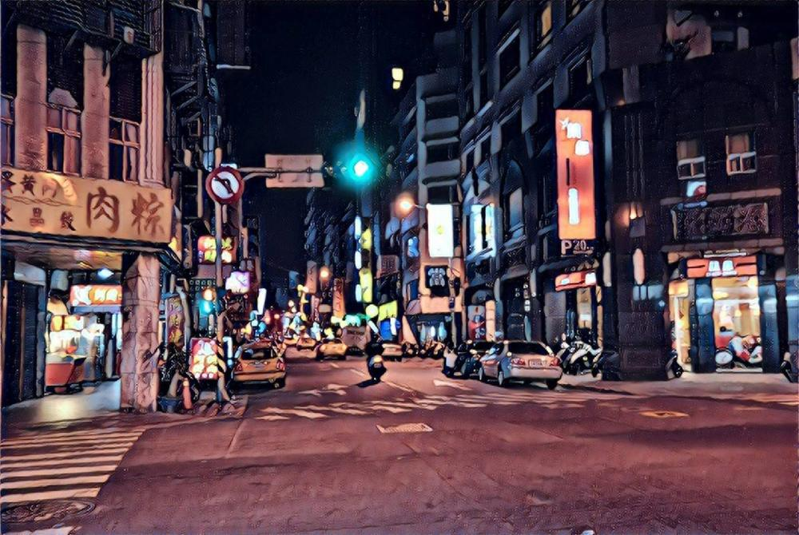

大夜班
2017-12-02

大家好，我是老闆「那個誰」，人生苦短，不如聽個「故事」解解悶？
華燈初上，下班的人潮流動在十字路口，個個游入街邊小店中尋餐溫飽，或提著大袋小袋快步地邁向歸家的路途，深怕袋內的熱度低了，讓家人吃不到一碗暖心的餛飩湯。
夜晚亮起的霓虹招牌，變成了城市的人工星空，負載著辛勞一天後，需要各種解放的靈魂。而大廈高樓、公寓套房也都點起了一盞盞象徵回家的燈火，不論裡面有甚麼喜怒哀樂，熄滅的那刻，一切都返於寧靜，接著沉入夢的迷幻舞台，人人在其中嬉笑哭泣，任憑潛意識中的牛鬼蛇神掌弄。
若不是市中心或特殊區域，此時街上應剩路燈屹立，偶有車燈閃過，以及便利商店門稀稀落落的叮咚聲，以微光和輕響，在這黑到不能再黑的深夜中，安慰著許多其他角落中還在奮戰的人們，讓他們感到並不孤單。
白日與黑夜的交替混亂了這些人的時序，在每個陰陽交界的午夜時分，勇敢的踏進這淒冷卻靜謐的時空，接榫著社會的脈動，那不被允許停下的脈動。
都說要黎明前的天空最黑，但他們的眼圈更黑，每個破曉時分，老闆我很容易在某個城市的轉角看見他們，啃食著早餐，望著天空，享受第一道光線的沐浴，以洗去黑夜在他們身上留下的疤痕。
有時要說早安還是晚安，總是會困擾著老闆我，最後多半都靜靜的看著他們，吸著菸，然後吐一口煙霧飄向杳杳的天空，隨即人便消失無蹤。幸好，老闆我都還記得先偷偷的拿了他們的故事，你想聽嗎？來柑仔店看看吧。
--無論你是誰，給我你的故事，我告訴你不知道的故事--